4. The First Law of Thermodynamics#
Relevant readings and preparation
Concepts in Thermal Physics: Chapter 11, 12
University Physics with Modern Physics 15th edition: Chapter 19
(Review sections) University Physics with Modern Physics 15th edition: Chapter 6.1-6.3, Chapter 7.3
Learning outcomes:
Explain the role and importance of thermodynamic systems and processes.
Calculate the work performed by a system during volume changes.
Define what is meany by a path between thermodynamic states.
Interpret and apply the first law of thermodynamics.
Identify and describe four key types of thermodynamic processes.
Explain why the internal energy of an ideal gas depends only on temperature.
Distinguish between molar heat capacities at constant volume and at constant pressure.
Analyse adiabatic processes in an ideal gas.
4.1. Review: Work#
Work is done by exerting a force \(F\) on an object, whilst the object is moved from a distance \(s\). The energy transferred in this process, or the work done, is simply
{kind=link}
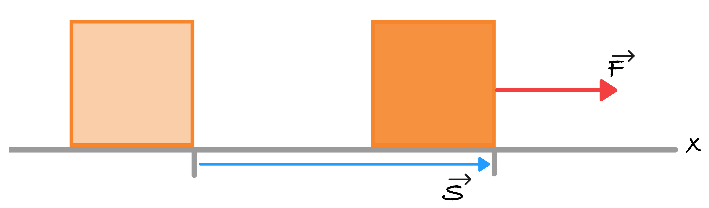
Fig. 4.1 Work is done by a force acting to displace an object.#
From (4.1), we can see that work can be increased by amplifying the force or by applying the force over a greater distance.
Force and displacement both have direction, making them both vectors, i.e., \(\vec{F}, \vec{s}\). As such, it is important to note the magnitude of their parallel components, as in Fig. 4.2. In order to find the resultant work done, we will need to use the dot product.
where \(\phi\) is the angle between \(\vec{F}\) and \(\vec{s}\).
{kind=link}
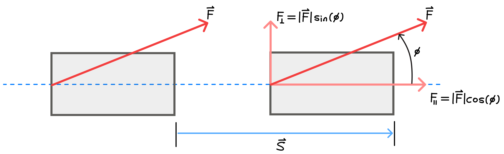
Fig. 4.2 A force acting at an angle to diplacement can be separated into parallel and perpendicular components. Perpendicular components do not contribute to the work done, whereas parallel components \(F_{||}=|F|\cos(\phi)\) do through (4.2).#
Note that:
Work is not a vector, having magnitude without direction.
Parallel components \(\vec{F}\) and \(\vec{s}\) will have \(W > 0\). Consider that when parallel, \(\phi=0\) such that \(\cos(0)=1\) and we regain (4.1).
Perpendicular components \(\vec{F}\) and \(\vec{s}\) will have \(W = 0\) as \(\cos(90)=0\).
Antiparallel components \(\vec{F}\) and \(\vec{s}\) will have \(W < 0\) as \(\cos(180)=-1\).
The work-energy theorem#
The work-energy theorem simply states that the work done on an object converts into kinetic energy. Despite work being a scalar quantity, it still relates to the direction of motion as this will determine whether the work being done is additive or subtractive.
Thus, work provides a direct quantitative measure of how forces modify motion. The kinetic energy of a particle is defined as:
where \(m\) is the mass of said particle,
and \(\vec{v}\) the velocity.
Like work, kinetic energy is a scalar quantity, independent of the direction of motion, and it is always non-negative (\(K \geq 0\), where \( K = 0 \) only for a particle at rest).
For motion along a straight line under a constant net force, the total work done equals the difference between the final and initial kinetic energies:
Work and energy with varying forces#
For forces that vary in magnitude or direction, we will need to supplement (4.2) which only considers the force at a given moment.
Consider a force that varies as we move along the x-axis, \(F(x)\). We can divide the displacement from \(x=0\) to a position \(x=a\) into small segments \(\Delta x\), where we can linearly approximate the work done over each segment:
This allows us to approximate the total work by summing over each of these segments,
The exact expression is given in integral form, in the limit of \(\Delta x \rightarrow 0\):
A simple example of such a force is the ideal spring, where \(F(x) = kx\) for a spring constant \(k\) and a displacement from the spring’s resting position \(x\). Graphically, the work done in extending the spring to \(x=a\) equals the area under the \(F(x)\) curve between \(0\) and \(a\).
{kind=link}
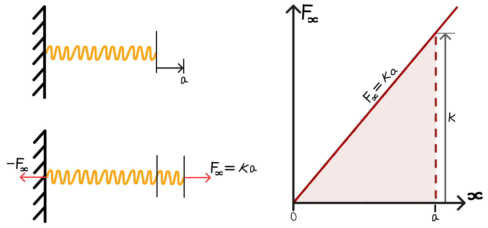
Fig. 4.3 Integrating \(F(x)\) for an ideal spring to find the work done \(W\). (Left): Extension of an ideal spring from \(x = 0 \to a\), where the force \(F\) is proportional to the spring’s elongation: \(F(x) = k\Delta x\). (Right): In integral form, the work done is equivalent to finding the area under the curve.#
Let us now consider the case where the spring has already undergone some extension to a point \(x_1\) and we wish to extend it further, to a point \(x_2\).
{kind=link}
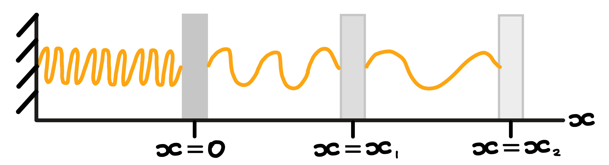
Fig. 4.4 The spring in this case is at rest when \(x=0\). Our case has the spring already extended to \(x_1\), and we intend to extend it further to \(x_2\).#
To find the work needed to extend this spring further, we cannot simply use (4.1) since
We must use:
{kind=link}
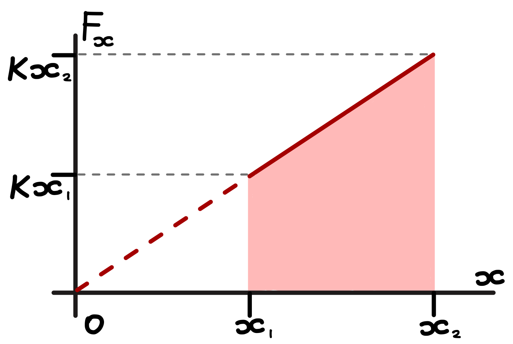
Fig. 4.5 The corresponding trapezoid which can be integrated to calculate the energy required for further stretching of the spring. The work here is given by \(W = \tfrac{1}{2}k(x_2^2 - x_1^2)\).#
Displacement along a curve#
We can also extend the work-energy theorem for motion along a curve, in which a force varies in direction as well as magnitude, and thus the displacement lies along a curved path. Consider the scenario depicted in the figure below:
{kind=link}
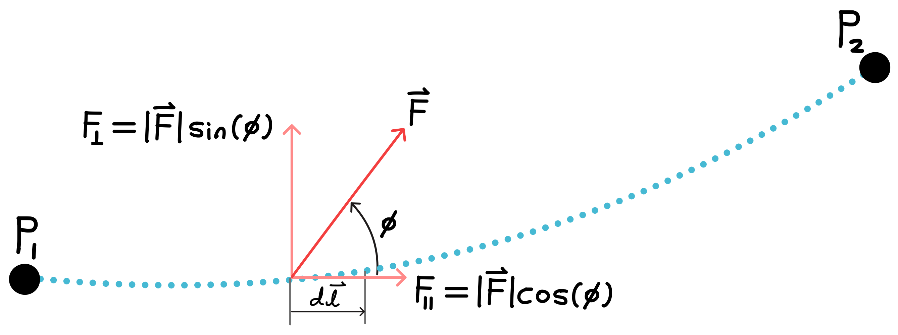
Fig. 4.6 A particle moves along a curved path from point \(P_1\) to \(P_2\) acted on by a force \(\vec{F}\) that varies in magnitude and direction.#
For a particle moving from point \(P_1\) to \(P_2\) along a curve:
Divide the path into infinitesimal vector displacements \(dl\), each tangential to the path.
Let \(F\) be the force at a point along the path.
Only the component of the force parallel to the displacement does work.
The differential work is:
where \(\phi\) is the angle between \(F\) and \(dl\),
and \(F_{\parallel} = Fcos(\phi)\) is the force component along the path.
The total work done as the particle moves from \(P_1\) to \(P_2\) is therefore:
This is a line integral, and it accounts for both the changing direction of motion and the changing force along the path.
Only the component of the force parallel to the path does work and changes the particle’s speed, while the perpendicular component changes only in the direction of motion.
4.2. Review: Internal Energy#
Conservation of energy is fundamental to thermodynamics because it governs how energy is transferred and transformed within a system. It provides the basis for the first law of thermodynamics, which relates changes in internal energy to heat added to a system and work done by the system. By applying energy conservation, we can distinguish between energy stored internally and energy exchanged as work or heat, enabling a consistent understanding of thermodynamic processes and their limits.
A force is conservative if the work it does is path independent - i.e., by lifting a book and waving it around, work is done by offsetting gravity. The amount of work depends only on the start and endpoints of the potential energy function \(V\) of the conservative force, such that \(\Delta V = -W\).
However, not all forces are conservative. Forces such as friction cannot be described by a potential energy function but they do not violate the law of conservation of energy. To account for them, we introduce the concept of internal energy, \(U\).
Internal energy is the energy associated with the microscopic motion and interactions of the particles which make up a system. Increasing the temperature of a system increases its internal energy; decreasing the temperature lowers it.
Work done by friction dissipates mechanical energy (kinetic and potential energy) by converting it into random microscopic motion of particles therefore increasing the internal energy of the system and typically raising its temperature.
Friction#
Consider a system in which friction \(W_\text{fric}\) does negative work, such as a block sliding across a rough surface. The block slows down, so its kinetic energy decreases (\(\Delta K < 0\)). The lost energy has not disappeared, it has dissipated into internal energy. Quantitatively, this can be expressed as:
where \(W_\text{fric}\) is the work done by our non-conservative force (friction)
and \(\Delta U_\text{int}\) is the resulting change in internal energy.
We can now write the total energy of the system as the sum of its kinetic energy \(K\), potential energy \(P\), and internal energy \(U_\text{int}\). The law of the conservation of energy requires that the total energy remains constant:
Rearranging and rewriting this in terms of differentials (e.g. \(\Delta K = K_2 - K_1\)) explicitly yields:
This is the general statement of energy conservation; although energy may be transferred between kinetic, potential and internal forms, the total energy of a closed system is conserved. If no energy is transferred into internal energy (for example, when only conservative forces act) then \(\Delta U_\text{int} = 0\), and the familiar result
is recovered.
4.3. Work in Thermodynamic Processes#
In thermodynamics, work is defined generally as energy transferred across a system boundary by any means other than heat. (4.1) expresses this idea in its canonical mechanical form but thermodynamic processes are not restricted to simple force–displacement interactions. The simplest and most important example of thermodynamic work arises when a compressible system changes volume against an external pressure.
{kind=link}
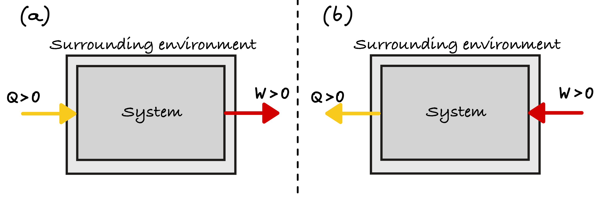
Fig. 4.7 A thermodynamic system may exchange energy with its environment by means of heat, work, or both. Note the sign conventions for \(Q\) and \(W\).#
Consider instead a simple thermodynamic system, a gas in a cylinder with a moveable piston. This system is the basic engine.
When a system such as a gas changes volume, it can do work on its surroundings. For a piston pressed against this system, the expansion causes a displacement doing work; and conversely when the piston moves inward the gas is compressed, doing work on the gas.
{kind=link}
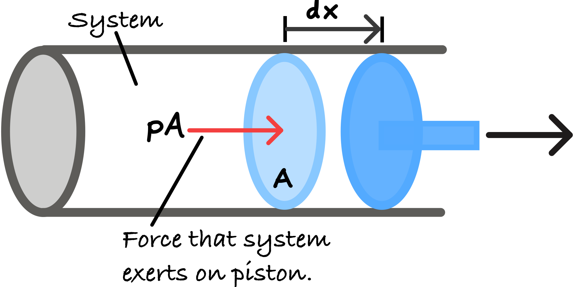
Fig. 4.8 A system (gas) doing infinitesmal work on a piston during a small expansion \(dx\). The expansion is due to the system’s pressure \(p\) acting over the surface of the piston \(A\).#
For a piston with cross-sectional surface area (\(A\)), the enclosed gas exerts a pressure \(p\) on the piston face, where pressure is defined as \(p=F/A\). The work done in this process is
Since \(Adx = dV\), where dV is the infinitesimal volume change of the system, the work done by the system in this infinitesimal volume change can be expressed as:
In a finite change of volume, \(V_1\) to \(V_2\):
A system’s pressure is dependent on volume, i.e., \(p(V)\), so evaluating (4.12) requires knowledge of the pressure-volume relationship. This work is represented graphically on a pV diagram (see pV diagrams) as the area under the \(pV\) curve between the points \(V_1\) and \(V_2\).
For expansion (\(V_2 > V_1\)), the integral is positive and the system does positive work on its surroundings. For a compression (\(V_2 < V_1\)), the integral is negative and the system does negative work. In the special case where pressure is kept constant throughout the whole process, (4.12) reduces to:
For situations where the volume is constant, \(dV = 0\) and hence no work is done.
Work and heat in thermodynamic processes#
We now consider how the work performed by a system and the heat transferred to it during a thermodynamic process depend on the specific path and conditions under which the process occurs.
When a thermodynamic system described using pressure and volume (\(p\), \(V\)), evolves from an initial state (\(p_1\), \(V_1\)) to a final state (\(p_2\), \(V_2\)), it passes through a sequence of intermediate equilibrium states called a path.
Like work, heat transfer is path dependent.
This path may be isobaric (performed under constant pressure) or isochoric (constant volume) or any other various path that takes \(T_1\) to \(T_2\). Although the final and initial state are the same, the heat transferred and work done are different because the intermediate states (the path) differ.
Key Conclusion: Heat and work are path-dependent quantities, so they cannot be assigned definite values for a given thermodynamic state, and it is meaningless to say that a system “contains” heat or work. In contrast, internal energy is a state function, uniquely determined by the system’s state. This is the reason we denote internal energy as a state function, while heat and work are not.
4.4. The First Law of Thermodynamics#
A brief history#
The first law of thermodynamics is often summarised as:
Definition
Energy is conserved and heat and work are both forms of energy.
It may seem obvious to us today that heat and work represent forms of transient energy, but this understanding came about over a period of gradual discoveries. In 1669, it was proposed that heat is an element called “phlogiston” which is released during combustion. Flaws in the theory led to experiments disproving it before the end of the 18th century, and resulted in the identification of oxygen. This chain of events would eventually lead to the formulation of the First Law of Thermodynamics.
1789 - Antoine Lavoisier:
Proposed the caloric theory in which heat is treated as a conserved, weightless fluid called caloric, responsible for thermal phenomena and combustion.
1798 - Benjamin Thompson (Count Rumford):
Demonstrated that friction during cannon boring can generate seemingly unlimited heat, contradicting the idea that caloric is a conserved substance.
1841 - Julius Robert Mayer:
Proposes a quantitative relationship between mechanical work and heat, arguing that they are interchangeable manifestations of a conserved quantity (later formalised as energy).
1840-1845 - James Prescott Joule:
Performs precise experiments (including paddle-wheel and electrical heating) to measure the mechanical equivalent of heat, showing that a fixed amount of work always produces the same amount of heat.
Outcome: Heat came to be recognised as a form of energy rather than a material substance, leading to the abandonment of caloric theory and the formulation of the first law of thermodynamics.
Formalism#
A thermodynamic system is characterised by its internal energy, denoted \(U\). Internal energy represents the total energy associated with the system’s internal degrees of freedom, including:
the combined kinetic energy of the constituent particles (translational, rotational, vibrational modes)
and the potential energies arising from interactions between those particles.
The first law of thermodynamics requires that energy be conserved - often by relating changes in internal energy to heat and work. Although heat and work themselves are not state functions, their net effect on a process is fully captured by the change in internal energy.
where:
\(Q > 0\) corresponds to heat added to the system. If it’s negative then heat is lost.
\(W > 0\) corresponds to work done by the system on its surroundings. If it’s positive then energy is being transferred out of the system and into its environment.
Work
Throughout this course, we adopt the convention that work is positive when it is done BY the system.
It is very easy to get the sign of work wrong. Some textbooks use \(U = Q + W\), defining positive work as work done ON the system. We will use the opposite. Note that both are equally valid as long as you don’t mix them up!
Example
Consider a gas that is suddenly compressed:
what are the implications to the first law for an instant process (i.e., how does this affect (4.15))?
and how does this work affect the system?
(a) Since this compression is sudden, no time has elapsed, so we can assume that there has been no heat transfer, i.e. \( Q = 0 \).
We will cover this case in more detail shortly, but this specific process (where \(Q=0\)) is called adiabatic.
(b) As we are compressing the gas, we are increasing the internal energy by doing work. To satisfy \(0 < U = -W\), we can see that \(W\) must be negative. Work is done on the system.
Further, we can see this work is converted directly into the system’s internal energy. Since this is a gas, there are no forms of internal energy besides average velocity, therefore this results in a temperature increase!
4.5. Thermodynamic Processes#
{kind=link}
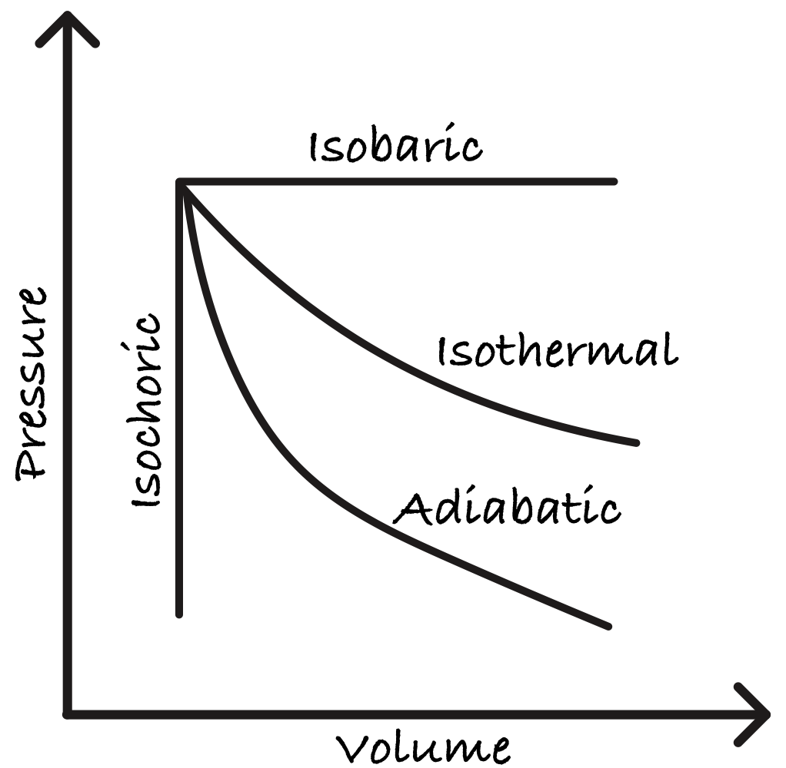
Fig. 4.9 The general trajectories of various processes depicted on a pV-diagram. The isobaric and isochoric trajectories are fairly obvious, though note that the isothermal trajectory is also the “constant internal energy” trajectory.#
Now let us consider various cases for gas expansion…
Adiabatic#
As in the example above, an adiabatic process is one in which there is no heat transfer into or out of the system such that \( Q = 0 \). Therefore, any temperature change through an adiabatic process must be done entirely through work, and not by heat transfer. Practically speaking, this can be achieved through sufficient system isolation; or by completing the process sufficiently quick such that heat does not have enough time to flow:
From the first law of thermodynamics:
Let us consider an adiabatic expansion of an isolated system. Specifically lets consider a gas confined in a cylinder with a moveable piston.
{kind=link}
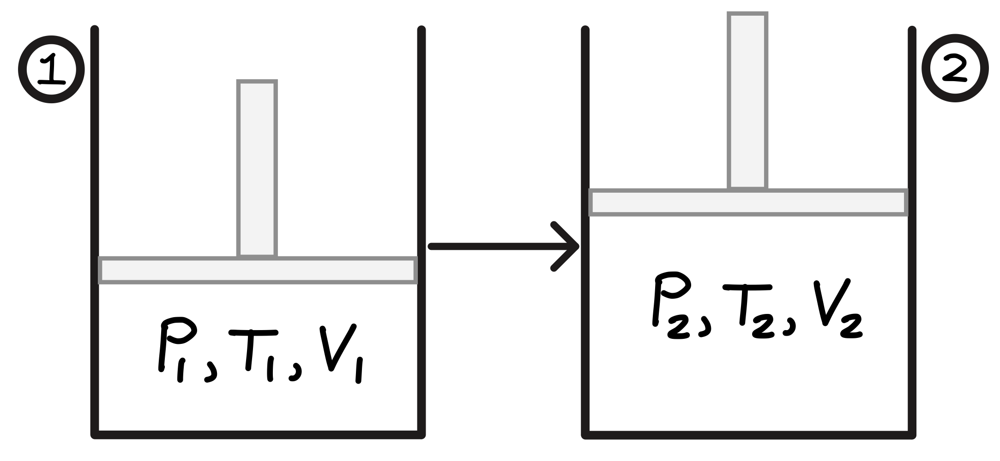
The system evolves from an initial state (\(P_1, T_1, V_1\)) to a final state (\(P_2, T_2, V_2\)) as the piston moves outwards and the gas expands. If the system is isolated then there is no mechanism for heat transfer between the gas and its surroundings. The process is therefore adiabatic, meaning \(Q=0\).
{kind=link}
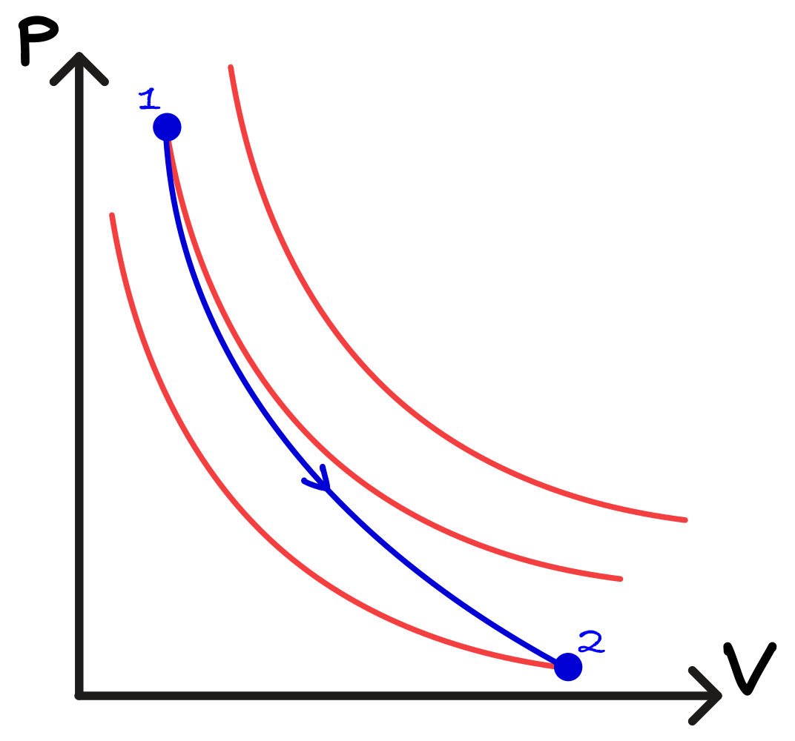
Fig. 4.10 pV diagram depicting an example of adiabatic expansion for an ideal gas.#
During expansion, the gas pushes the piston outward and does work on its surroundings, hence \(W > 0\). Because no heat enters the system to compensate for the energy loss, the work must come from the gas’s internal energy. As a result, the gas’s internal energy decreases and, for most gases, the drop in internal energy corresponds to a drop in temperature.
This behaviour is shown in Fig. 4.9: the adiabatic path is steeper than an isothermal one, reflecting the simultaneous decrease in both pressure and temperature as the volume increases.
The reverse process, the compression of the gas, also illustrates adiabatic behaviour. When the piston is pushed inwards, work is done on the gas (\( W < 0 \)). From \( \Delta U = - W \), the internal energy increases and in most cases results in a temperature increase.
A practical example of adiabatic processes occurs in internal-combustion engines, more specifically in a compression stroke: The air-fuel mixture is rapidly compressed, leaving little time for heat exchange with the surroundings and rendering the process approximately adiabatic. Work done on the gas increases its internal energy, causing the temperature to rise.
Isobaric#
An isobaric process is one in which the pressure remains constant. Such processes commonly occur when a gas is allowed to expand or contract against a constant external pressure; consider a gas beneath a freely moving piston, or boiling water exposed to atmospheric pressure.
On a p-V diagram, an isobaric process is represented by a horizontal line, since the pressure does not change whilst the volume increases or decreases.
Initial state: (\(p\), \(V_i\))
Final state: (\(p\), \(V_f\))
{kind=link}
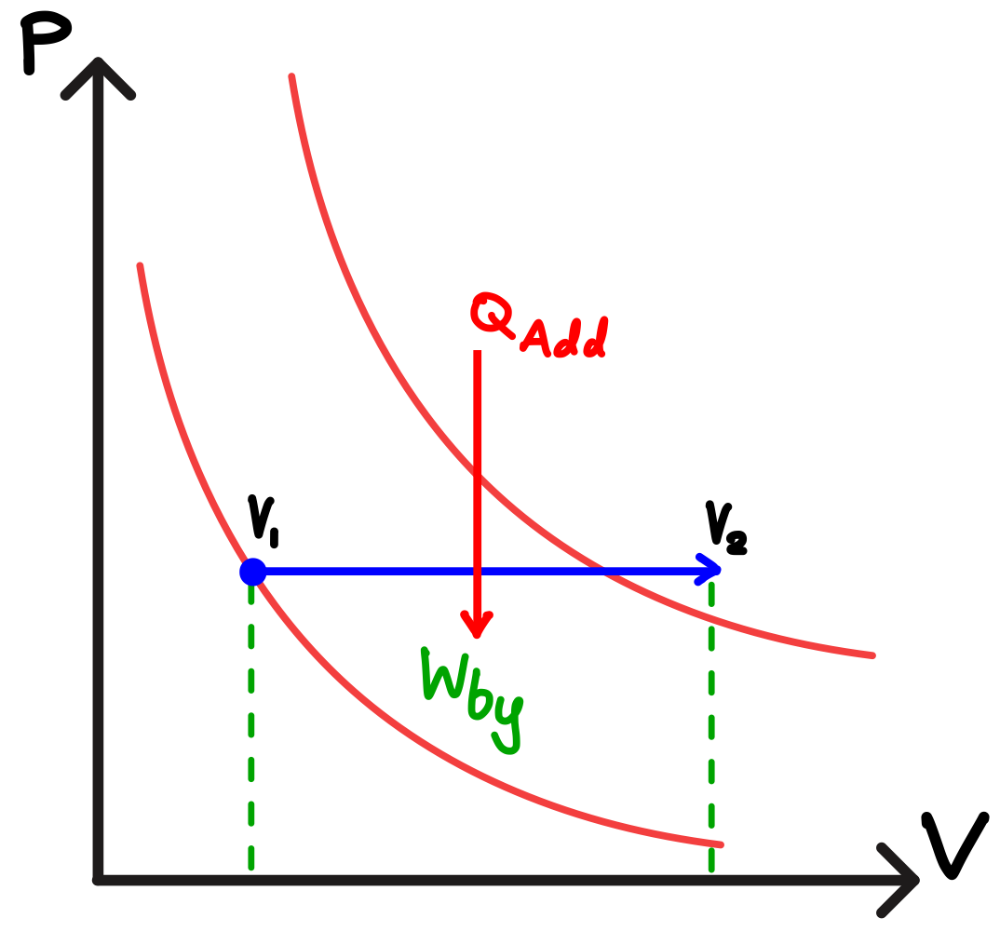
Fig. 4.11 pV diagram displaying an example of an isobaric process. The work done here equates to the area beneath the horizontal line.#
The area under this horizontal line corresponds to the work done by the gas.
In an isobaric process, none of the quantities \(\Delta U\), \(Q\) or \(W\) are necessarily zero. The first law still applies as normal. Unlike in the isothermal case, the temperature generally changes, so the internal energy also changes. A classic real-world example is boiling water at atmospheric pressure, where volume changes occur while pressure remains constant.
Isothermal#
An isothermal process is one which occurs at constant temperature, \(\Delta T = 0\). For a process to remain isothermal, heat must flow into or out of the system slowly enough that thermal equilibrium with the surroundings is maintained at all times. In practice, this requires good thermal contact with a heat reservoir and quasi-static motion of the piston.
For many systems, internal energy depends on both temperature and volume. However, for an ideal gas, the internal energy depends only on temperature. Therefore, in an isothermal process involving an ideal gas, \(\Delta U = 0\). This is a special but extremely important case.
Starting from the first law:
Therefore, all the heat added to the system is converted directly into work done by the gas. No energy gets stored internally. Now let us consider a gas in a cylinder joined to a movable piston, with initial volume \(V_1\) and temperature \(T_1\).
{kind=link}
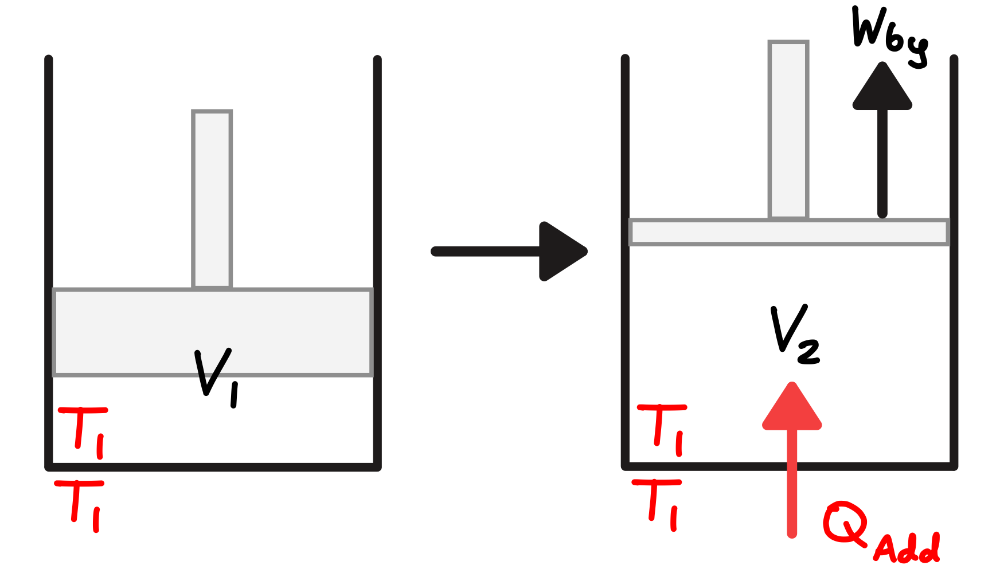
Fig. 4.12 Illustration of a piston in motion as the gas expands, performing work on its environment as the temperature is kept constant - consuming all of the heat added.#
As the piston moves outward, the gas expands and does work on the surroundings. Expansion by itself would cool the gas. To keep the temperature constant, heat must flow into the gas from the surroundings.
(Reminder: a compressed gas tends to heat up and an expanding gas tends to cool down. This implies that heat must be added during isothermal expansion to maintain a constant temperature.)
So what is the work done by the gas? Let’s consult a pV-diagram…
{kind=link}
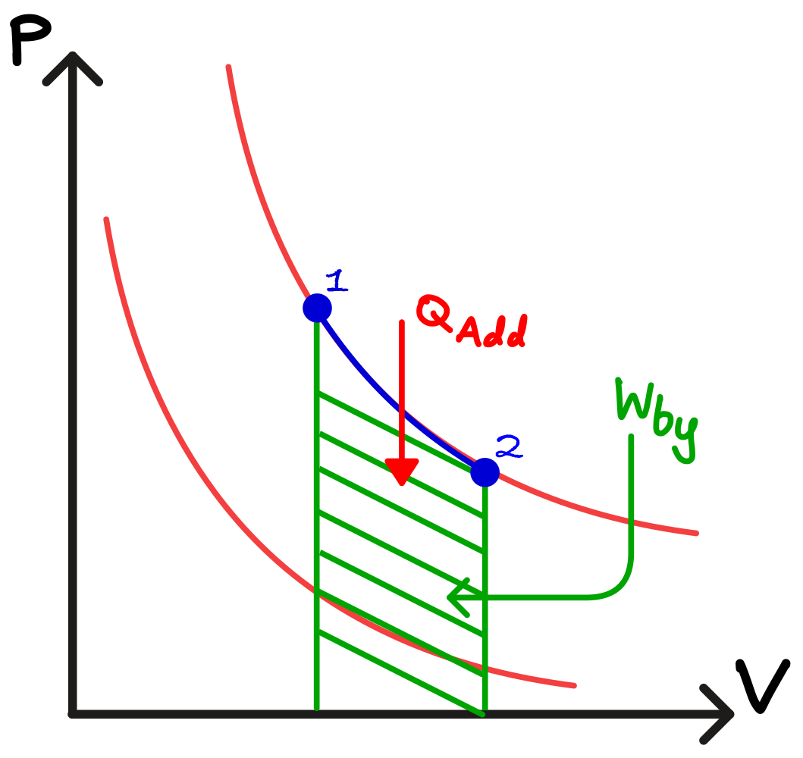
Fig. 4.13 Corresponding pV-diagram depicting the isothermal transition between states 1 and 2.#
The isothermal path follows a curve defined by \(pV=nRT\) in which \(T\) is constant. The pressure decreases smoothly as volume increases. The area under the curve represents the work done by the gas. Compared to an adiabatic expansion from the same initial point, the isothermal curve is less steep, because heat input prevents the temperature from dropping. The work done by the gas is given by:
Using the ideal gas law
we can substitute this expression for \(p\) into the integral:
In summary, in an ideal isothermal system, the temperature remains constant (\(\Delta T = 0\)), the internal energy change is zero (\(\Delta U = 0\)), and the heat added is equal to the work done by the gas.
4.6. Cyclic Processes#
A cyclic process is a thermodynamic process in which a system evolves through a sequence of states and eventually returns to its initial state. On a pV-diagram, a cyclic process appears as a closed loop.
{kind=link}
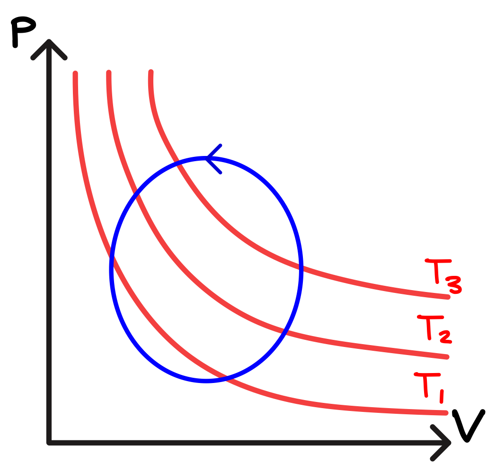
Fig. 4.14 Illustration of a cyclic process on a pV diagram featuring isothermic paths.#
Because the system ends in the same state in which it began, all state variables return to their initial values. In particular, the internal energy at the end of the cycle is equal to the internal energy at the beginning, so the resulting change in internal energy over a complete cycle is therefore zero. Notably, the temperature of the system also goes unchanged. Using the first law of thermodynamics:
This means that, over a complete cycle, the net heat added to the system to the net work done by the system.
When computing the integral of a cyclic process, the limits of integration form a closed loop, and we write the work done by the gas as:
where \(\oint\) denotes a closed loop integral,
and the sign of the integral depends on the direction in which the loop is traversed on the pV-diagram.
A clockwise cycle corresponds to \(+\oint p dV\), resulting in an overall positive value. In this case, work is done by the system on its surroundings.
A counter-clockwise cycle corresponds to \(-\oint p dV\), hence the work is negative, meaning work is done on the system.
Cyclic processes are fundamental to the operation of heat engines. In a heat engine, the system absorbs heat from a hot reservoir and performs net work on its surroundings over each cycle, while its internal energy remains unchanged.
In an isolated system, there is no heat exchange or work done on or by the surroundings, therefore \(Q = W = 0\). Consequently, the internal energy remains constant - thus we conclude that the internal energy of an isolated system does not change during any process.
Example
Consider a mol (\(n=1\)) of gas kept at zero degrees celcius (273 K) in a container with volume 3 L. It is allowed to expand via an isothermal process to a volume of 10 L, and then compressed back to 3 L via an isobaric expansion.
(a) How much work is done by the gas during the expansion?
(b) How much heat is transferred into the system in the expansion?
(c) How much work is done to compress the gas to its original volume?
(a) (Isothermal expansion)
(b)
Remember that for isothermal processes, \(Q_{added} = W_{by}\), so this quantity is also \(2.7 \times 10^3 \ \text{J}\), as all of the heat is converted into work.
(c) (Isobaric compression)
The negative sign here indicates that work is being done ON the gas during compression.
4.7. Case Study: Cloud Formation#
Cloud formation provides a useful real-world example of an adiabatic process, recalling that ‘adiabatic’ means no heat is transferred (\(Q = 0\)). Consider moist air being forced up the side of a mountain by the wind, illustrated in the figure below.
{kind=link}
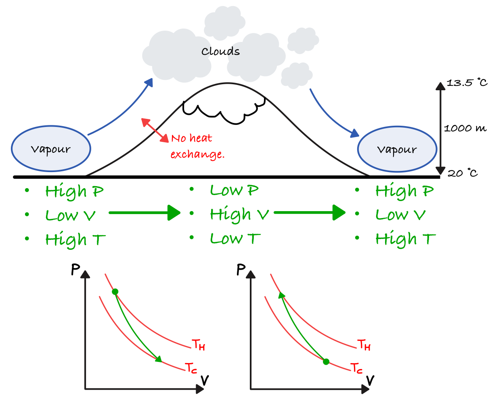
Fig. 4.15 Illustration of the process of cloud formation, accompanied by the corresponding pV-diagrams as the air vapour pocket ascends and descends the mountain.#
As the air rises, it moves into regions of lower atmospheric pressure, brought on at greater altitudes because there is less air from above pushing down due to gravity. To remain in pressure equilibrium with its surroundings, the rising air must expand. During this expansion the air does work on its surroundings (i.e. work is being done by the gas). Because the air is not in any meaningful thermal contact with the mountain surface, this expansion occurs with negligible heat exchange and can be treated as being adiabatic.
From the first law of thermodynamics, an adiabatic expansion leads to a decrease in internal energy which corresponds to a decrease in the gas pocket’s temperature. This cooling is an essential process for cloud formation.
Partial pressure versus vapour pressure#
Air is a mixture of gases, including Nitrogen, Oxygen, and water vapour, amongst small amounts of other gases, such as Argon, methane and of course Carbon Dioxide. Each component contributes to the total pressure of the composite gas. The partial pressure of a constituent gas is the pressure that gas would exert if it alone occupied the entire volume of the combined, mixture gas.
For example, if air at a total pressure of 100 kPa contains 2% water vapour, then the partial pressure of the water vapour is
The vapour pressure of water is the point at which the vapour phase and condensed phase are in thermal equilibrium. Vapour pressure depends strongly on the temperature. Cooler air can hold less water vapour.
{kind=link}
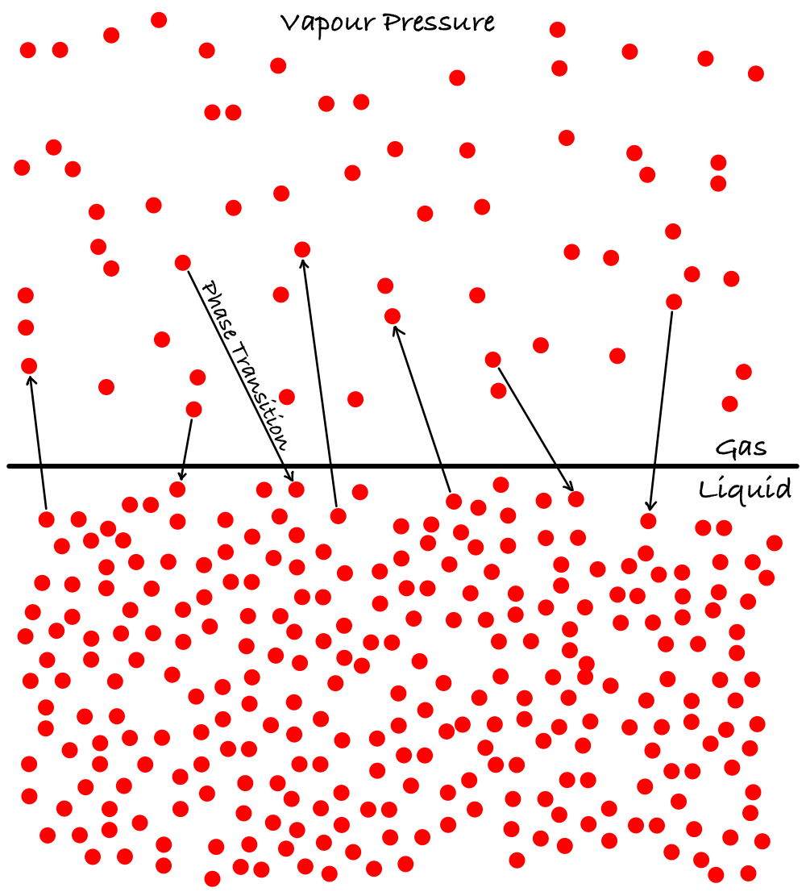
Fig. 4.16 Illustration of the microscopic process of evaporation and condensation which occurs at the surface of a liquid.#
As the rising air cools during adiabatic expansion, the vapour pressure of the air decreases. Cloud formation begins when the partial pressure of water becomes equal to the vapour pressure. If the air cools further (e.g. by gaining additional elevation), the partial pressure will exceed the vapour pressure, and the excess water must condense into liquid droplets. These droplets scatter light and appear as the clouds we see in the sky.
When partial pressure > vapour pressure \(\rightarrow\) condensation \(\rightarrow\) clouds are formed.
When partial pressure < vapour pressure \(\rightarrow\) all water remains in vapour form.
{kind=link}
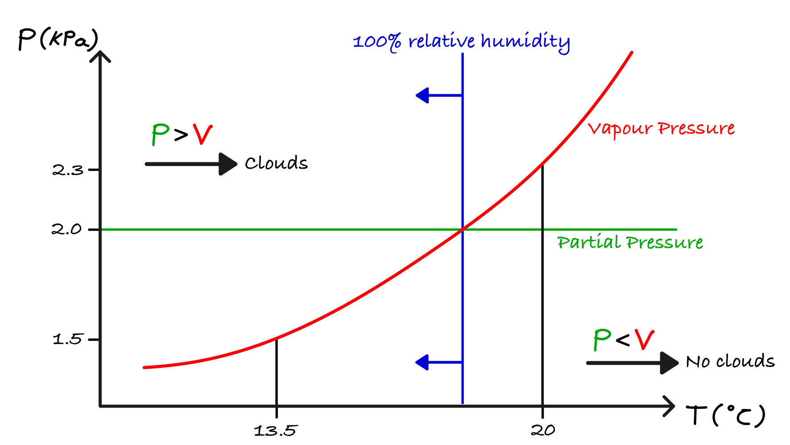
Fig. 4.17 Graph depicting the conditions required for cloud formation generalised to different vapours.#
Vapour Pressure Example
Air can hold up to 3% of its volume at 30°C and 4.2% at 42°C, what is the relative humidity?
If the partial pressure is greater than the vapour pressure, then we have 100% relative humidity.
4.8. Internal Energy of an Ideal Gas: Free Expansion#
In a free expansion, a gas expands into a vacuum inside an insulated container. No heat enters or leaves the system and the gas does no work: \(Q = W = 0\) thus \(\Delta U = 0\). Does the temperature of the gas change?
{kind=link}
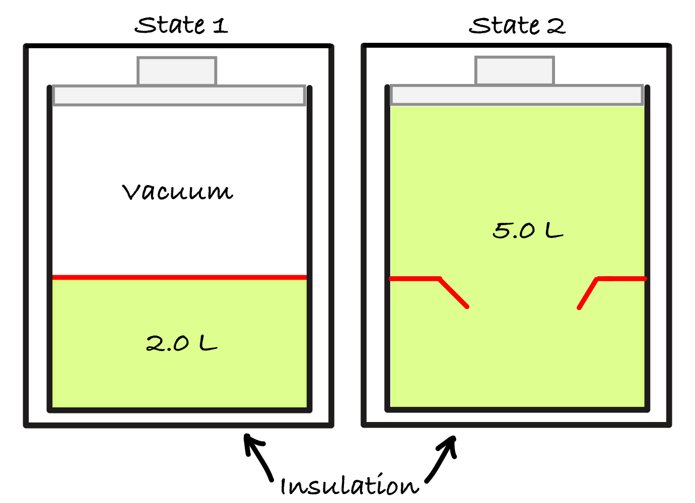
Fig. 4.18 Figure depicting an enclosed and insulated container containing an ideal gas. In the first state, the gas occupies a volume of 2.0 L and is barred from the rest of the container by a partition barrier. When the barrier breaks, the gas diffuses to fill the rest of the container, with no external work or heat added to the system, whereupon it reaches state 2.#
Suppose that the temperature did change during free expansion whilst the internal energy stayed constant. We would then have to conclude that the internal energy depends not only on temperature \(T\), but also on volume \(V\) or pressure \(p\). However, experiments show that for a low-density (ideal) gas, the temperature does not change during free expansion, despite the fact that \(V\) and \(p\) do. This leads us to a crucial conclusion:
For an ideal gas, the internal energy, \(U\), depends only on temperature \(T\), not on pressure or volume.
This property, together with the ideal-gas equations of state is a fundamental part of the ideal-gas model. For non-ideal gases, experiments do show a temperature change during free expansion despite an unchanging internal energy (\(\Delta U = 0\)). This means that internal energy cannot entirely depend on temperature; it must also depend on pressure and/or volume. Considering the microscopic reality of gases, this result is not surprising. Non-ideal gases have intermolecular forces; as molecules move further apart from each other during expansion they experience an increase in their potential energies
If total internal energy remains constant the kinetic energy must drop accordingly - corresponding to a drop in temperature.
4.9. Heat Capacities for an Ideal Gas#
To understand how heat affects a gas’s internal energy, note that the internal energy depends on both temperature and volume - \(U = U(V, T)\). Therefore, a small change in internal energy can be expressed in terms of small changes in temperature and volume.
In (4.20) the variable subscript aside the derivative denotes that the variable is held constant during differentiation. Note that:
and
Therefore, rearranging the first law using \(dW = - pdV\) yields:
and now using (4.20) we find
which we can then divide by dT to obtain:
This relationship holds for any changes in temperature or volume, but our goal is to determine how much heat must be added to change the temperature under specific constraints. The first case is when the volume is held constant, which leads to the definition of heat capacity at constant volume, \(C_V\), which describes the heat required to raise the temperature of a system without changing its volume.
The heat capacity at constant pressure is then given by:
such that:
Recall that the heat capacity has units of \(\left[ \text{J} \cdot \text{K}^{-1} \right]\) and refers to a specific amount of gas. It is often practical to express heat capacity per mole or per unit mass; the lower is denoted using a lowercase ‘c’ and is referred to as the specific heat capacity.
where \(M\) is the mass of the material. Specific heat capacities have units of \(\left[ \text{J} \cdot \text{K}^{-1} \cdot \text{kg}^{-1} \right]\).
Let us now put this into practice for a monatomic gas. For an ideal monatomic gas, the internal energy arises from its kinetic energy and equals \(U = \tfrac{3}{2}RT\) per mole (see: Heat Capacities of Gases and Equipartition of Energy). Consequently, the internal energy depends only on the temperature. Hence:
The equation of state for 1 mole of an ideal gas is simply \(pV = RT\). Rearranging to make \(V\) the subject on the LHS and differentiating with respect to \(T\) at constant pressure gives us:
Supplying this result and its predecessor to eq. (4.26) we have that
Because \(U = \tfrac{3}{2}RT\), we therefore have that:
and
The ratio of \(C_p\) and \(C_V\) is a very important and useful quantity as named the adiabatic index (\(\gamma\)):
For an ideal monatomic gas:
{kind=link}
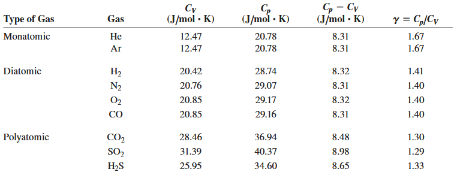
Fig. 4.19 Table depicting the heat isochoric and isobaric heat capacities of monotomic, diatomic and polyatomic gases at low pressure, featuring their adiabatic indices. This table was cited from University Physics with Modern Physics 15th Edition, Chapter 19.7, page 627.#
4.10. pV\(^{\gamma}\) for Adiabatic Processes#
For a perfect ideal gas, we have that \(pV^{\gamma}\) is constant for all adiabatic processes (recall that adiabatic refers to contexts in which heat transfer (\(Q\)) is zero). This does not mean that each of the parameters \(p\), \(V\) and \(\gamma\) are constant, we instead find that \(\Delta p\), \(\Delta V\) and \(\Delta \gamma\) are all non-zero, but their resulting values combine to reform the constant \(pV^{\gamma}\).
We will prove that \(pV^{\gamma}\) is a constant for adiabatic processes. Starting with the internal energy of an ideal gas:
we differentiate both sides with respect to temperature (\(T\)), then multiply both sides by \(dT\)…
Now we have an expression for \(dU\) which we can relate to the first law of thermodynamics, remembering that heat transfer for an adiabatic process is zero:
so we have
Now that we’ve related these two expressions for internal energy, let us consider the differential form of the ideal gas law:
Divide both sides by pV and recall that \(R = C_p - C_V\).
Now, recall that:
hence,
The \(\tfrac{dV}{V}\) terms on either side cancel each other out through redundancy, and by adding the term on the RHS such that it equals zero, we are left with:
Now, we are left with incomplete integrands. Recognise that when we integrate the RHS that we are left with a constant (as a constant differentiated becomes zero):
A sum of logs \(A\) and \(B\) is equivalent to a log of the product \(AB\). Knowing this, and the fact that \(a \times \log(B) = \log(B)^a\), we can rewrite the above equation as:
Finally, to remove the logarithm from the LHS we exponentiate. However, since \(e^{\text{constant}}\) is still a constant, we surmise that:
and hence,
for any adiabatic process.
Work done during a reversible adiabatic process#
For an adiabatic process, no energy is transferred as heat \(Q = 0\). For a reversible (quasi-static) process, the work done by the gas is:
For an ideal gas undergoing a reversible adiabatic change, the equation of state is
where \(K\) is a constant. We can therefore write the pressure as
Substituting into the expression for the work,
The integral evaluates to
so the work becomes
Using \(K = pV^\gamma\), we evaluate the terms:
Substituting these into the expression for the work gives
This is commonly written in the equivalent form